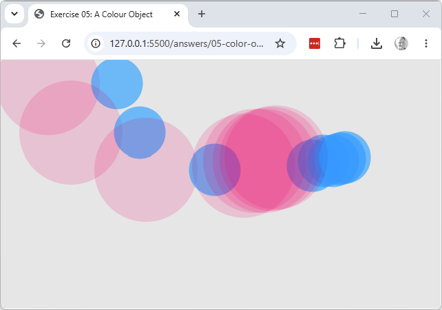

Working copy: exercises/05-color-object/.
color() object and use it to draw a second circle in a different colour from
the first, on the same click.setup(), create col with a much lower alpha value than 150 (a new color() object —
there's no way to change the alpha of one that already exists), then click several times in the
same spot without pressing a key to clear. Explain what you see in terms of blending with what's
already on the canvas.